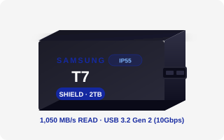

T7을 사려고 검색했더니 T7 Shield라는 게 따로 있었습니다.
뭐가 다른 건지, 가격이 왜 다른 건지 처음엔 헷갈렸습니다.
직접 비교해보니 핵심 차이는 딱 하나였습니다.
속도는 동일합니다. 방진·방수 등급이 다릅니다.
▣ 핵심 3줄 요약
- T7과 T7 Shield의 속도(읽기 1,050 MB/s, 쓰기 1,000 MB/s)와 인터페이스(USB 3.2 Gen 2)는 동일합니다.
- 핵심 차이는 방진·방수 등급: T7은 IP55, T7 Shield는 IP65입니다. 야외 활동량에 따라 결정하세요.
- 가격 차이가 1~2만원 수준이라면 야외 활동이 잦은 분은 T7 Shield가 합리적인 선택입니다.

①두 제품 스펙 비교
| 항목 |
T7 vs T7 Shield |
| 인터페이스 | USB 3.2 Gen 2 (10Gbps) — 동일 |
|---|
| 읽기 최대 | 1,050 MB/s — 동일 |
|---|
| 쓰기 최대 | 1,000 MB/s — 동일 |
|---|
| 방진·방수 | T7: IP55 / T7 Shield: IP65 |
|---|
| 외관·소재 | T7: 금속 슬림 / T7 Shield: 러버 코팅 강화 |
|---|
| 용량 라인업 | 1TB / 2TB — 동일 |
|---|
| 커넥터 | USB Type-C — 동일 |
|---|
②IP55 vs IP65 — 실제로 얼마나 다른가
IP55
T7 기본 모델
- 분진: 부분 보호 (5등급)
- 물: 모든 방향 분사 (5등급)
- 빗속 이동: 괜찮음
- 먼지 많은 환경: 주의 필요
IP65
T7 Shield
- 분진: 완전 차단 (6등급)
- 물: 모든 방향 분사 (5등급)
- 빗속 이동: 괜찮음
- 먼지 많은 환경: 안전
실제 차이가 나는 상황:
해변 모래사장, 건설현장, 공장 등 분진이 많은 환경에서 IP65가 더 안전합니다.
빗속에서의 보호는 두 제품이 사실상 동일합니다.
IP55와 IP65 모두 수중 침수(IP67 이상)는 보호 범위 밖입니다. 물에 빠뜨리면 고장 날 수 있습니다.
③상황별 선택 — 어떤 환경에 어떤 모델이 맞나
01실내 위주 / 카페·사무실 이동
가방에 넣어 이동하고 실내에서 주로 사용한다면 IP55 수준으로도 충분합니다.
T7 기본 모델이 더 가볍고 슬림한 디자인. 비용 절약도 가능합니다.
02야외 촬영 / 트레킹 / 해변
비 맞을 수 있는 야외 현장이나 모래가 많은 해변에서 사용한다면 IP65가 의미 있습니다.
특히 모래나 미세 먼지가 많은 환경에서 IP65(분진 완전 차단)의 차이가 실질적으로 드러납니다.
03건설현장 / 공장 / 분진 환경
분진이 많은 작업 환경이라면 T7 Shield의 IP65가 장기 안심 사용을 위한 현명한 선택입니다.
먼지가 내부에 유입되면 SSD 수명과 신뢰도에 영향을 줄 수 있습니다. IP65가 이 위험을 차단합니다.
④솔직한 구매 판단
✅ T7 Shield 선택
- 야외 현장 촬영이 잦은 경우
- 먼지·모래 많은 환경 사용
- 장기적으로 안심 사용 원함
- 가격 차이가 크지 않다면
⚠️ T7 기본 모델로 충분
- 실내·카페·사무실 위주 사용
- 가방에 넣고 이동만 하는 경우
- 슬림하고 가벼운 디자인 선호
- 예산 절약이 우선인 경우
⑤구매 전 체크리스트
환경 확인
야외 현장이나 분진 많은 환경에서 주로 사용하는가?
실내 위주 사용이라면 T7 기본 모델도 충분한가?
가격 비교
T7과 T7 Shield의 현재 가격 차이를 확인했는가?
공통 확인
PC에 USB 3.2 Gen 2(10Gbps) 포트가 있는가?
삼성전자 공식 스마트스토어에서 정품 구매인가?
▣ 오늘 내용 요약
- T7과 T7 Shield는 속도(1,050/1,000 MB/s)와 인터페이스(USB Gen 2)가 동일합니다. 차이는 IP55(T7) vs IP65(T7 Shield) 방진 등급 하나입니다.
- 야외·먼지 환경이 잦다면 IP65 T7 Shield가 실질적 보호를 제공합니다. 실내 위주라면 T7로 충분합니다.
- 가격 차이가 1~2만원 수준이라면, 야외 활동이 있는 분은 T7 Shield 쪽이 장기적으로 현명한 선택입니다.
💬 여러분은 T7과 T7 Shield 중 어떤 걸 선택하셨나요?
이유도 알려주시면 다음 콘텐츠 기획에 참고하겠습니다!
출처
삼성전자 공식 사이트 (T7 / T7 Shield 제품 페이지) — 2022~2023년
IEC 60529 방진·방수 등급 표준 문서
본 글은 공개된 공식 스펙을 바탕으로 작성됐습니다. 가격은 시점에 따라 변동될 수 있으며, 구매 전 최신 정보를 직접 확인하시길 권장합니다.
#삼성T7
#삼성T7Shield
#T7vsT7Shield
#외장SSD비교
#IP55vsIP65
#방수외장SSD
#포터블SSD추천
#삼성외장SSD
#야외촬영장비
#외장SSD구매가이드
#USB10Gbps
#삼성포터블SSD